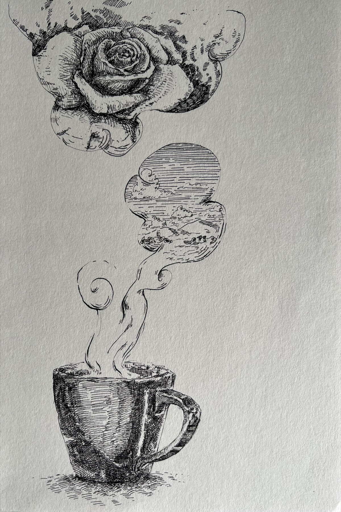
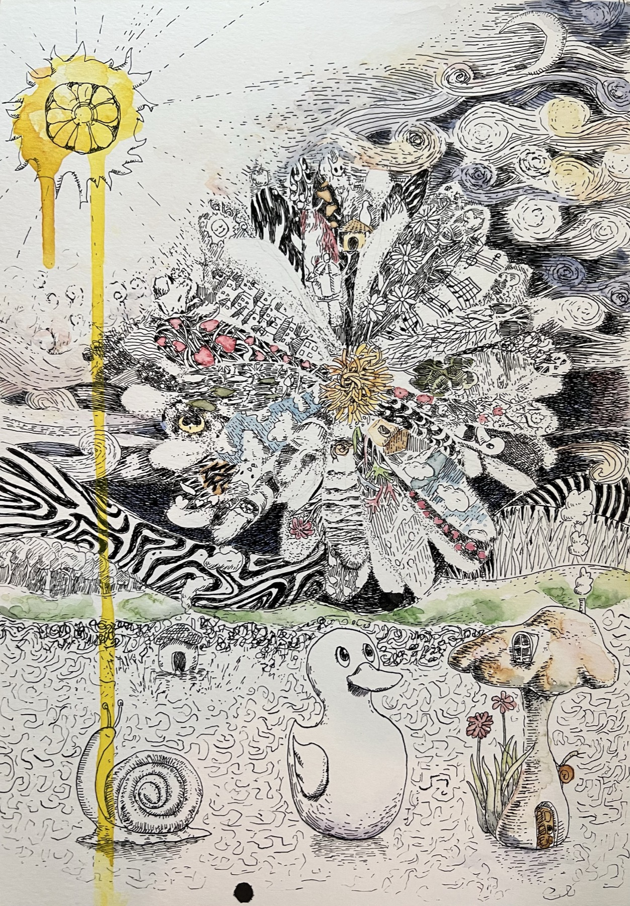
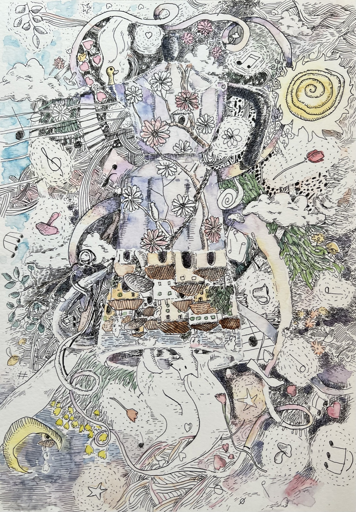
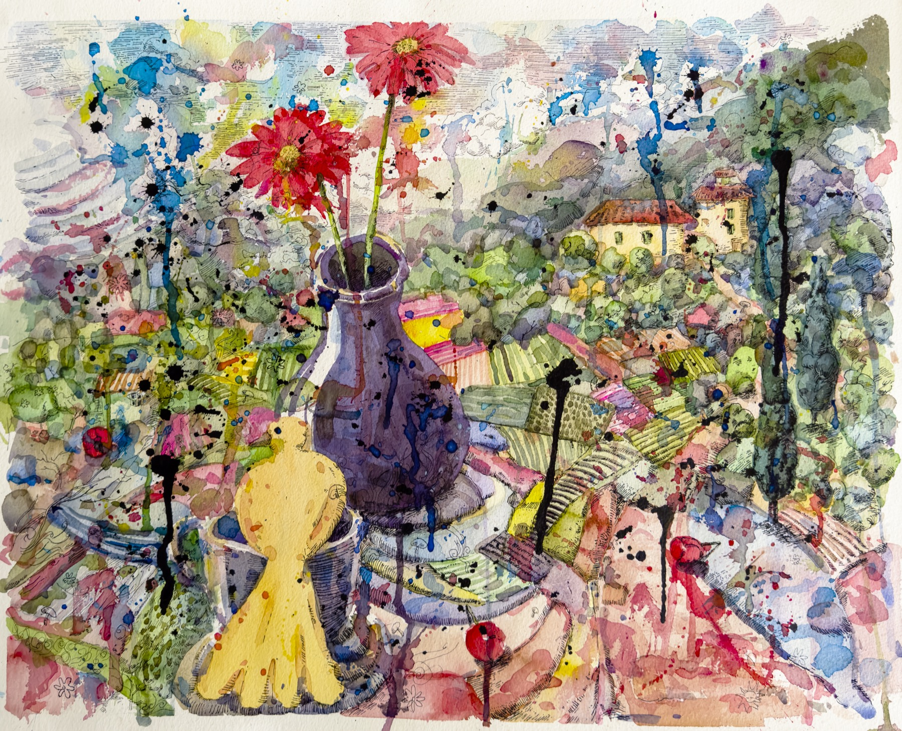

นิทรรศการเดี่ยว · ชุดผลงานSolo Exhibition · Series

At The End
You Must Wake Up
ดนย บุญทัศนกุล · Danaya Buntasnakul
จิตรกรรมสีน้ำ หมึก และลายเส้นบนกระดาษWatercolour, ink and drawing on paper
เลื่อนลงScroll
ดนย บุญทัศนกุล ทำงานอยู่บนเส้นแบ่งบาง ๆ ระหว่างการหลับและการตื่น ระหว่างโลกที่เรามองเห็นกับโลกที่เราเพียงรู้สึกถึงDanaya Buntasnakul works along the thin line between sleeping and waking — between the world we see and the world we only feel.
เขาผสมสีน้ำ หมึก และจังหวะแบบดนตรีเข้าด้วยกัน จนภูมิทัศน์กลายเป็นห้วงความฝัน และความฝันกลายเป็นที่ที่เรากล้าเผชิญสิ่งที่ตื่นอยู่เรากลับไม่ยอมรับHe blends watercolour, ink and a musical sense of rhythm until landscapes become reveries, and dreams become the place where we dare to face what, awake, we refuse to admit.
เขาเรียนจิตรกรรมที่มหาวิทยาลัยเชียงใหม่ (ศิลปมหาบัณฑิต) และเคยศึกษาที่ L'Accademia di Belle Arti di Firenze ประเทศอิตาลี ผ่านนิทรรศการเดี่ยว 6 ครั้งในรอบ 15 ปี งานของเขาวนเวียนอยู่กับความใกล้ชิด การพลัดพราก และโอกาสที่หมุนกลับมาใหม่ได้เสมอ—เหมือนนาฬิกาทรายที่เพียงรอวันถูกพลิกHe studied painting at Chiang Mai University (M.F.A.) and at the Accademia di Belle Arti di Firenze in Italy. Across six solo exhibitions over fifteen years, his work returns again and again to intimacy, separation, and the chance that can always come around once more — like an hourglass simply waiting to be turned.
นอกจากเป็นจิตรกร เขายังเป็นนักแสดงละครเวทีและนักร้องประสานเสียงที่ได้รับรางวัลระดับนานาชาติ ประสบการณ์บนเวทีและในเสียงเพลงไหลกลับเข้ามาในงานวาด ในรูปของจังหวะ การฟัง และการมองอย่างช้า ๆBeyond painting, he is a stage actor and an internationally awarded choral singer. His experience on stage and in song flows back into his drawing as rhythm, as listening, and as a slow way of seeing.
นิทรรศการนี้ขอชวนผู้ชมเดินผ่านความฝันหนึ่งคืน เริ่มจากภาพของสุนัขจิ้งจอกที่ขดตัวหลับกลางทุ่ง—ภาพแทนของจิตใจที่กำลังพักผ่อนเพื่อจะหายดี ก้อนเมฆแปลงร่างเป็นสัตว์ ปราสาทเล็ก ๆ ตั้งอยู่บนหลังของมัน ทุกอย่างค่อย ๆ จมลงสู่ห้วงฝันThis exhibition invites you to walk through a single night's dream. It begins with a fox curled asleep in a field — an image of a mind at rest, healing. Clouds shift into animals, a small castle rests on their backs, and everything sinks slowly into the dream.
At The End You Must Wake Up คือบันทึกของเรื่องที่เกิดขึ้นแล้วผ่านไป แต่ส่วนลึกของใจยังไม่ยอมปล่อยความรู้สึกที่อยู่นอกเหนือการควบคุม การวาดชุดนี้จึงเป็นการบำบัดตัวเอง—กล่อมใจให้หลับอยู่ในฝัน จนถึงวันหนึ่งที่ใจถูกชำระจนใส และพร้อมจะลืมตาตื่นขึ้นอีกครั้งAt The End You Must Wake Up is a record of things that happened and passed, while some deep part of the heart still refuses to release feelings beyond its control. Making this series became a way of healing — lulling the heart to sleep within the dream, until the day it is washed clear and ready to open its eyes again.


โอกาสผ่านมาแล้วผ่านไป หลายเรื่องเริ่มต้นและจบลงอย่างไม่มีเยื่อใย เหมือนความฝันที่เราไม่อยากลืมตาตื่น นาฬิกาทรายมีความหมายมากกว่าเครื่องนับเวลาถอยหลัง เมื่อทรายหมด มันเพียงนิ่งรอวันถูกพลิกกลับ เพื่อเริ่มต้นใหม่อย่างไม่รู้จบ—เช่นเดียวกับความรัก ความสัมพันธ์ ชีวิต และโอกาส งานหมึกในองก์นี้คือ "ภายใน" ของนาฬิกาเรือนนั้น: เส้นที่ถักทอกันแน่นจนเวลากลายเป็นวัฏจักรChances come and go; many things begin and end without sentiment, like a dream we would rather not wake from. The hourglass means more than a countdown. When the sand runs out it simply waits, still, to be turned over — beginning again, endlessly: like love, like relationships, like life and opportunity. The ink works in this act are the "interior" of that hourglass: lines woven so tightly that time itself becomes a cycle.


OSHO ว่าไว้ว่า ปัญญาญาณเปรียบเหมือนสะพานที่เชื่อมทางให้เราเดินกลับสู่บ้านที่แท้จริง—บ้านที่มีอยู่มาตลอด ตั้งอยู่ตรงนั้นก่อนเราเกิดและหลังเราตาย เราไม่ใช่เจ้าของบ้าน เราเป็นส่วนหนึ่งของมัน สะพานที่พาไปสู่บ้านนั้นซ่อนอยู่ทั่วทุกหนแห่ง—ในแววตาของสุนัขใต้แดด ในควันบาง ๆ จากถ้วยกาแฟ หรือแม้แต่ในภาพวาดสักภาพ ลายเส้นหมึกบนกระดาษชุดนี้ คือสิ่งที่ศิลปินค้นพบแล้วนำกลับมาเล่าOsho said that intuition is like a bridge that leads us back to our true home — a home that has always been there, standing before we are born and after we die. We do not own the home; we are part of it. The bridge to it hides everywhere — in the eyes of a dog in the sun, in the thin steam rising from a cup of coffee, even in a single painting. These ink drawings on paper are what the artist found there and brought back to tell.




เมื่อใจค่อย ๆ ถูกชำระ สีสันก็กลับคืนมา ความฝันไม่ได้จางหาย แต่แปรเป็นแสง—ดอกไม้บานอยู่ในแจกัน ดวงตะวันละลายลงอย่างช้า ๆ และนาฬิกาทรายก็พร้อมจะถูกพลิกกลับอีกครั้ง นี่คือชั่วขณะก่อนการลืมตา ที่ทุกสิ่งยังพร่างพราวด้วยสีของความหวังAs the heart is slowly washed clear, colour returns. The dream does not fade but turns into light — flowers bloom in a vase, the sun melts slowly down, and the hourglass is ready to be turned once more. This is the moment before waking, when everything still shimmers with the colour of hope.


